벡터장 (Vector Field)
일반적으로 벡터장은 정의역이 ℝ^2(혹은 ℝ^3)에 속하는 어떤 점들의 집합이고, 치역이 V_2(혹은 V_3)에 속하는 어떤 벡터들의 집합인 함수
P와 Q는 이변수의 스칼라 함수들이고, 이들을 벡터장과 구분하기 위해 스칼라장이라고 부름.
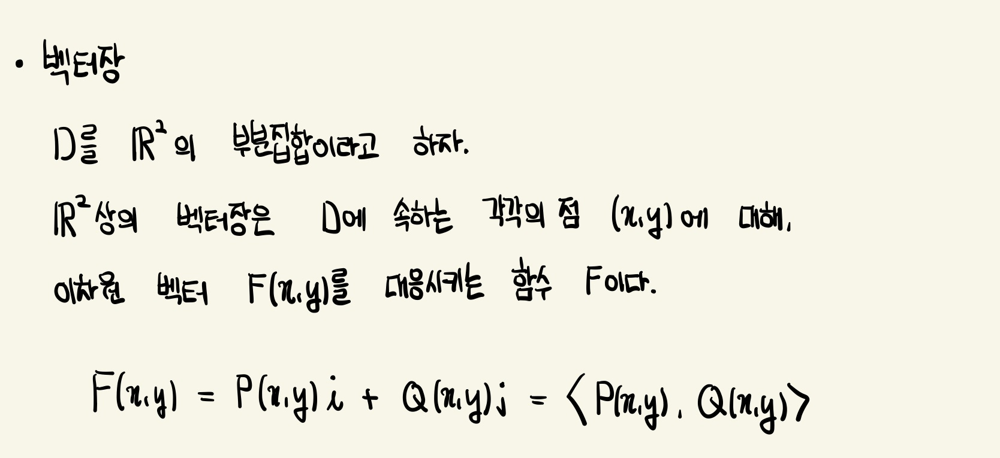
기울기장 (Gradient Field)
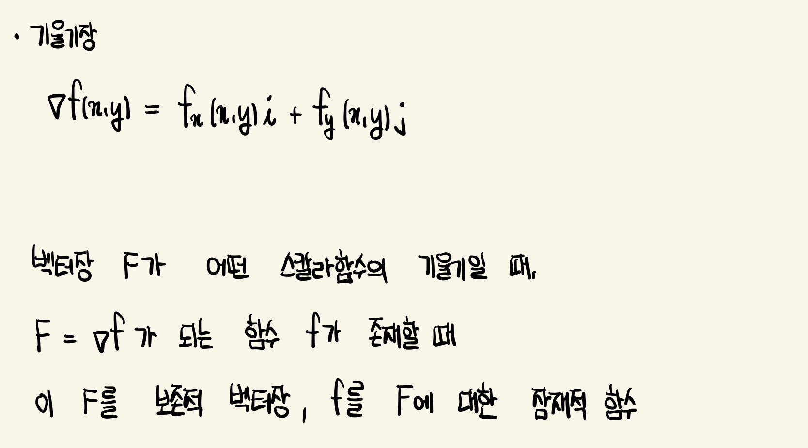
선적분 (Line Integral)
구간 [a,b]에서 적분하는 대신에 곡선 C 위에서 적분하는 것
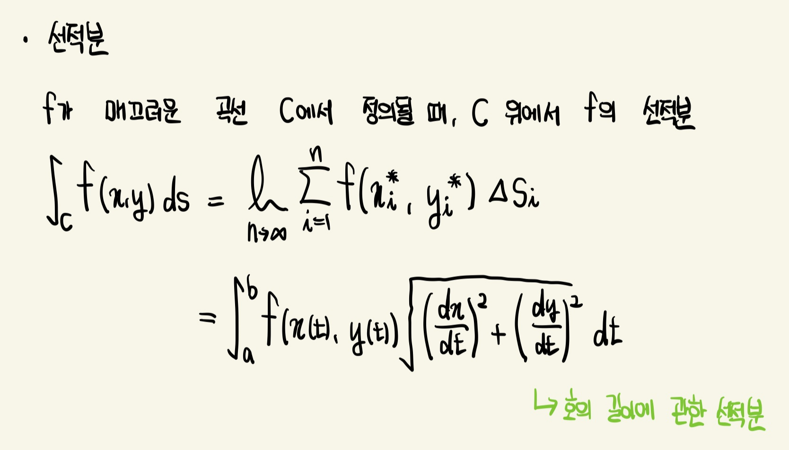 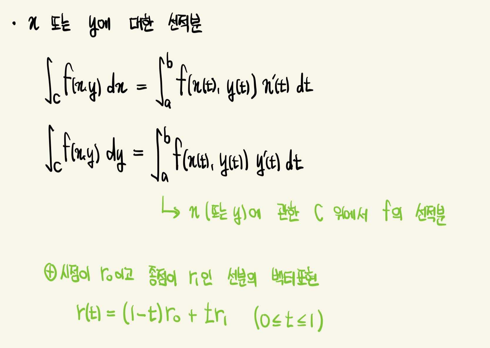
일반적으로 매개방정식은 매개변수 t의 증가에 대응하는 양의 방향으로 곡선 C의 방향을 결정함
-C가 C와 똑같은 점으로 구성되지만 반대 방향을 갖는 곡선이라 하면 아래와 같음
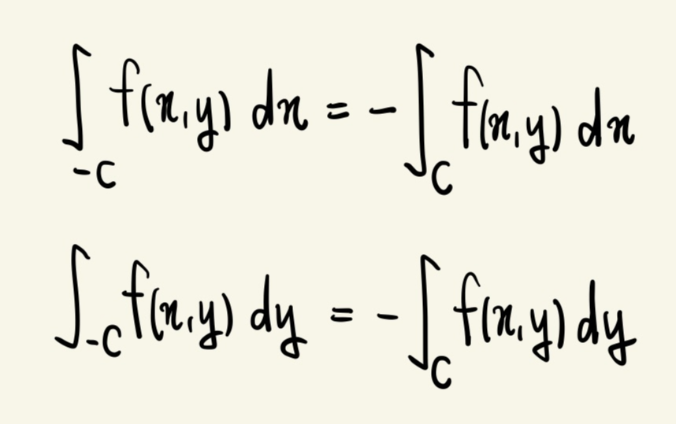
하지만 호의 길이에 관하여 적분하면 곡선의 방향을 반대로 하더라도 선적분의 값은 변하지 않음
이것은 C의 방향이 반대로 될 때 Δx_i와 Δy_i의 부호는 변하지만 항상 Δs_i는 양수가 되기 때문 ( Δs_i는 부분 호의 길이)
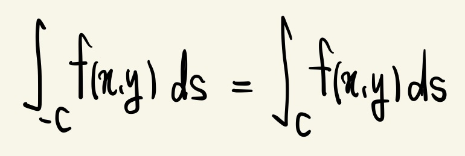
선적분의 기본정리
아래 정리는 보존적 벡터장(잠재적 함수 f의 기울기 벡터)의 선적분은 C의 끝점에서 f의 함숫값을 구하여 간단하게 계산할 수 있음을 의미
∇f의 선적분은 f의 순변화량
C_1과 C_2가 동일한 시작점과 끝점을 가진 매끄러운 곡선이라면 선적분의 값은 동일
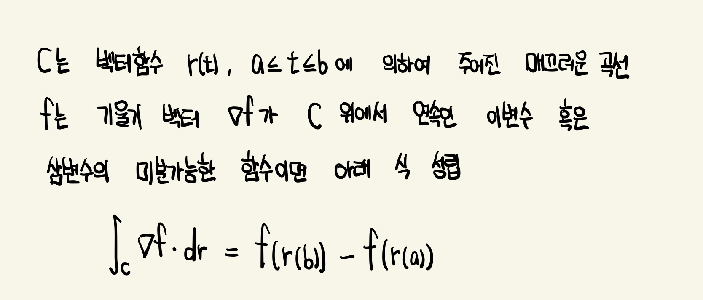
경로 독립성 (Independent of Path)
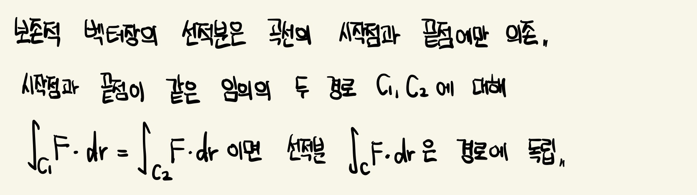
* 닫힌 곡선 : 한 곡선의 시작점과 끝점이 같음
* 열린 영역 : D에 속하는 임의의 점 P에 대해 D에 완전히 포함되는 중심 P를 갖는 원판이 존재
* 연결 영역 : D에 속하는 임의의 두 점이 D에 포함되는 어떤 경로에 의해 연결 될 수 있음
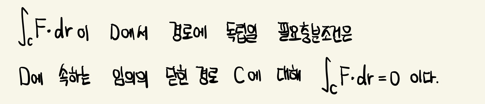 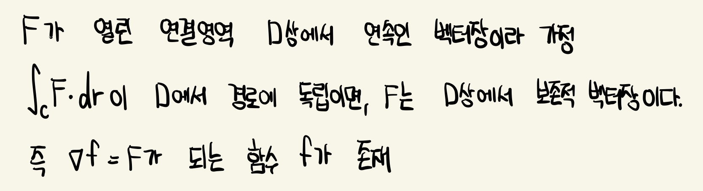
보존적 벡터장과 잠재적 함수
벡터장 F가 보존적인지의 여부를 결정하는 방법
F가 보존적 벡터장임을 알았다면 잠재적 함수 f를 찾는 방법
* 단순 곡선 : 양 끝점 사이의 어떤 곳에서도 서로 교차하는 점이 없는 곡선
* 단순 연결 영역 : D 안에 있는 모든 단순 닫힌 곡선이 D 안에 있는 점들만을 둘러싸고 있는 연결 영역 D
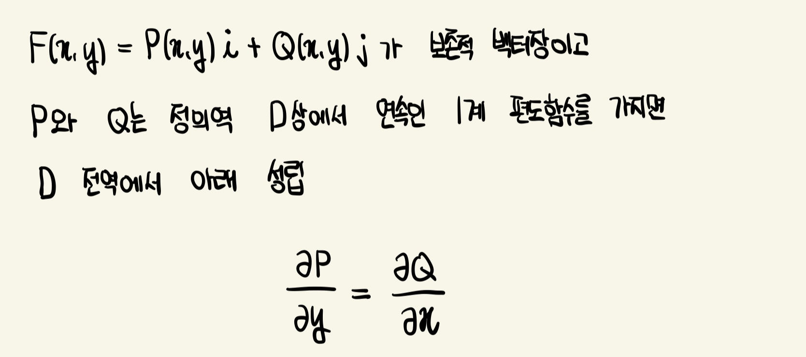 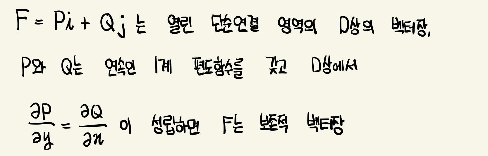